|
PSV - Roda JC (4-1) 9 maart 2002 |
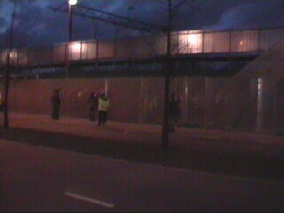
Rodasupporters gaan door de sluis.
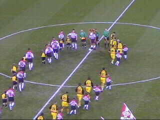
De spelers betreden het veld.
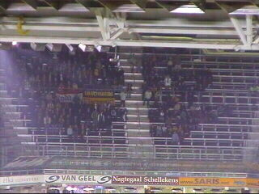
Matige opkomst van de Rodasupporters.
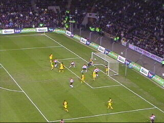
Kezman verlengt een kopbal van Ooijer 1-0 (18).
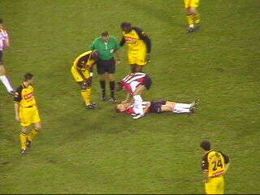
Vogel is gebotst met onze reus Vrede en ligt
knocked out op de grond.
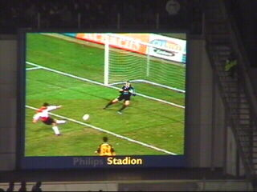
Vennegoor of Hesselink schiet 2-0 binnen (28).
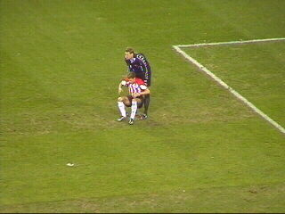
Kalac verleent eerste hulp.
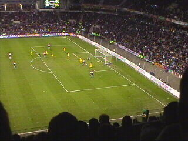
Vrede kan een bal van Gakhokidze niet
wegwerken waarna V.o.H. 3-0 scoort (38).
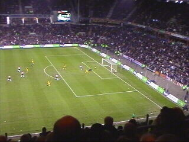
Het drama is compleet: Rommedahl scoort 4-0
op slag van rust (45).
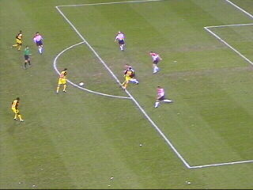
Vicelich legt de bal panklaar voor Anastasiou die
de bal vervolgens het stadion uitschiet.
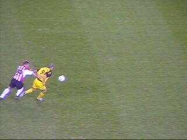
Hofland gaat aan Soetaers hangen.
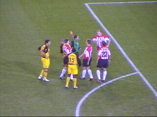
Dat levert de verdediger rood op (61).
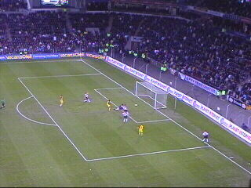
Meteen profiteert Roda door een mooi doelpunt
van Sonko (62).
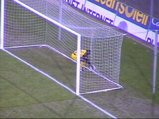
Hier pakt hij gehaast de bal; er is immers nog tijd
genoeg en een man meer.
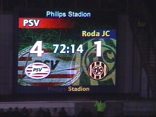
Echter deze stand blijft ongewijzigd.
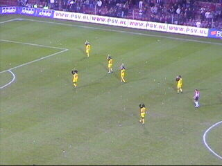
Na deze nederlaag is Roda naar de 16e plaats
gezakt. Nacompetitie is nu een virtueel feit!
Vicelich is niet zo vrolijk.
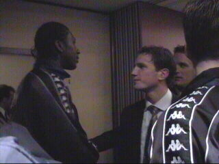
Vrede maakt een praatje met enkele PSV'ers in
het spelershome.
©KPD